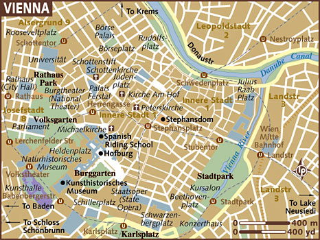
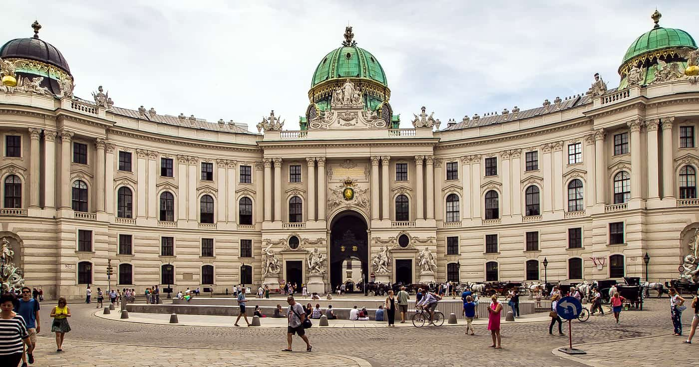

Местоположение

Виена е столицата и най-големият град на Австрия, със статут на една от нейните девет провинции.
Тя е главен град на Австрия с население от 1,9 милиона жители (2,6 милиона с предградията). Днес той е шестият по големина град по население в границите на Европейския съюз и вторият по големина немскоезичен град след Берлин.
История
Историята на Виена е дълга и разнообразна. Заселването на територията на днешна Виена започва по време на неолит, с разпространението по
Дунав на земеделието и скотовъдството (VI хилядолетие пр.н.е.), за което Виенската котловина предоставя оптимални условия:
плодородни почви, изобилни водни източници и благоприятен климат. Най-значимото доримско селище е това на хълма Леополдсберг,
чиято история започва в средата на бронзовата епоха и завършва буквално две поколения преди идването на римляните.
Забележителности
Виена предлага необятен избор - независимо дали сте любители на изкуството, културата или модерната европейска изтънченост. Символът на града
е катедрала св.Стефан, направена в готически стил. Неговата найй-характерна особеност са 250 -те хиляди цветни керемидени плочки,
които образуват покрива. На северната му страна са изобразени гербовете на Австрия и на столицата. Гледката от Винското колело в увеселителният
парк Пратера и Кулата Дунав също привличат много посетители, както и мноеството музеи като тези в двореца в Хофбург, двойката Природоисторически
музей и Музей на изкуствата, както и музеят на техниката.

- Катедралата “Свети Стефан” – Намира се в центъра на Виена. Строена е в течение на няколко века, като началото е било поставено от Рудолф IV върху руините на стари църкви, през 1359г.
- Имперският дворец Хофбург – Резиденция на династията на Хабсбургите в продължение на 600 години.
- Замъкът Шонбрун, градините му, Зоологическата градина – Лятна резиденция на династията на Хабсбургите
- Пратера – Най-известната атракция на парка е Виенското колело, откъдето се разкрива гледка към града. То се движи много бавно, което дава възможност за снимане.
- Музеите близнаци – музей на историята на изкуствата и природонаучния музей – Двете сгради са проектирани от едни и същи архитекти и освен, че са прекрасни архитектурни творби, съдържат богати колекции.